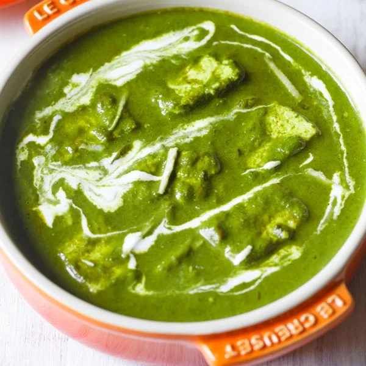

Palak Paneer

Palak paneer is a north Indian vegetarian curry with origins in the Punjab region.
The dish is comprised of a spinach purée (palak is Hindi for spinach) and
fresh-pressed cheese, with an aromatic blend of spices that includes ginger,
garlic, and garam masala. Palak paneer is also sometimes called saag paneer.
Ingredients
- 1-2 tablespoons ghee or clarified butter
- 2 cups fresh spinach
- 1 medium tomato, quartered
- 1-inch knob of ginger, peeled and cut into pieces
- 5 garlic cloves (3 whole, 2 finely chopped)
- 1 green chili (Thai green chilies work well)
- 1 large onion, medium diced
- ½ cup water
- 1 tsp garam masala
- ¼ tsp turmeric
- ¼ tsp cayenne pepper
- ¼ tsp ground coriander
- 2 tbsp heavy cream
- 1 cup paneer cheese, cut into 1-inch cubes (or more, to preference)
- ½ tbsp fenugreek leaves, crushed
- Juice of half a lemon
- Salt and pepper to taste
Steps
-
Bring salted water to a boil in a medium pot. Blanch the spinach leaves for 2 minutes, until leaves are bright green. Remove immediately and dunk in cold water; drain well. (You can also use frozen spinach; pop in the microwave in a bowl with a bit of water before using.)
-
Combine with tomato, ginger, the whole cloves of garlic, and chili in a food processor. Purée until a fine, wet paste forms.
-
Melt ghee in a sauté pan over medium-high heat. Add the chopped garlic, and sauté until beginning to brown, and then add the onions. Season with salt and pepper, and cook until translucent.
-
Add the spinach mixture and water to the pan. Stir to combine, and season to taste. Lower stovetop to medium heat and cover, stirring occasionally, for about 6-8 minutes, or until thickened to preference. If it becomes too thick, adjust with more water.
-
When you’ve achieved desired consistency, add garam masala, turmeric, cayenne, and coriander, and stir to combine. Season to taste.
-
Lower heat and add heavy cream and paneer. Simmer for a few minutes, until paneer is warmed through.
-
Remove from heat. Add lemon juice, fenugreek leaves, and stir to combine. Season with salt if desired. Serve hot with basmati rice or naan bread.